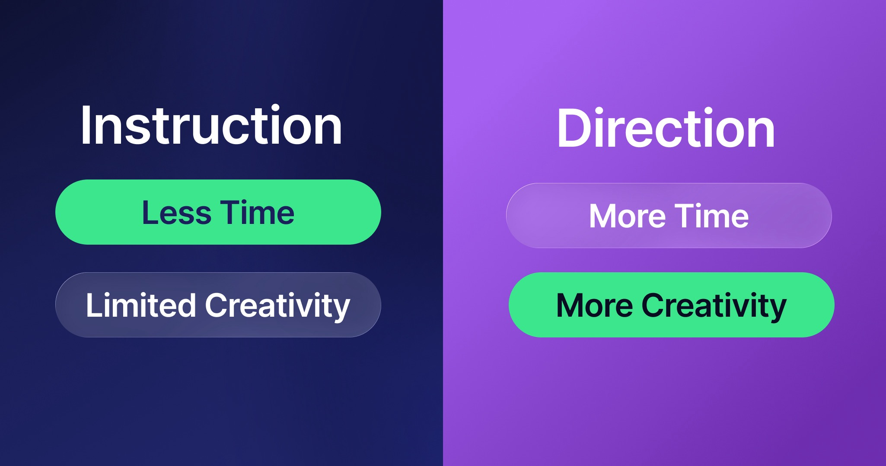

Why your design hours blow out
The hours blow out during the design, but they are never caused there. Here is what actually drains them, and how to catch it before work starts.

How does a straightforward design end up eating so many hours just to get over the line? The hours blow out during the design, but they're never caused there.
You prepared the brief. It felt like a regular job, and the designer got straight onto it. Then the first version comes back, and it's not quite what you pictured. You send feedback, it shifts but drifts, another round, still not there, and now the due date is in the corner of every email. Nobody did anything wrong. The hours are going anyway.
The blowout lands as hours first: rounds you didn't plan for, then the deadline they push, then the cost that follows. And it's the outcome of what went unplanned at the setup: the brief that looked fine, the request that sounded small. By the time the hours are gone, the cause is three weeks behind you.
The briefs that bleed hours
After years of running production for in-house marketing teams, the same patterns keep appearing, and every row on this page has cost us real hours on real projects before it earned its place here. These are the conditions a brief carries in with it, and every one is catchable before work starts. That's the point of this page.
| What slips in | Why it blows out | Risk |
|---|---|---|
| No approved copy at briefing | When the copy changes after the design is underway, the layout and hierarchy built around it fall out of context, and often the only fix is a redo. | Start over |
| The unmade decision ("we'll let you explore") | Sounds like creative freedom. With no target agreed, every round is a guess for them to react against, and exploration gets billed as production. | Start over |
| Everyone acts as art director | When several people give direction, each stepping out of their lane to shape the creative, the designer is left reconciling contradictory opinions instead of following one. The original intent dilutes until the design belongs to nobody, and getting it back usually means starting over. | Start over |
| A stakeholder joins mid-project | New voices bring new directions. Minor technical input is fine; a directional change from someone who wasn't at the brief restarts the work done before them. | High |
| The mind reader | The most common one, and it's not a technical gap, it's a creative one. Because you've worked together a while, the brief assumes the designer already knows the creative direction, so it goes unsaid. They fill the unsaid part with a guess, and the guess surfaces as rework once it's too late. | High |
| Contradicting references | Each reference looks good alone, but some pull against each other. Nobody has resolved which one wins, so the designer ends up guessing at a direction that was never actually agreed. | High |
The 15-minute jobs that aren't
Some requests look small from the outside, and if you're not the one designing, there's no reason you'd know otherwise. These are the ones that make people wonder why it's taking so long, with the designer's logic behind each.
| What gets said | Why it takes time |
|---|---|
| "Same as last time but different" | Keep the structure, change the theme and content, and you're rebuilding most of the design while it looks like a tweak. A revision in name, a new build in practice. |
| "Let's match what that company does" | Matching to a degree is fine. The trap is that nobody has agreed on the degree. "Like theirs but ours" can mean borrow the vibe or sit right next to it, and until that gauge is set, every round is the designer guessing how far to go. |
| "Can we try a different direction?" | A direction isn't a variation. It's a new idea, which means fresh thinking, research, and concepting from scratch, not adjusting what's already there. |
| "Can we see a few options?" | Whether it's variations on a direction or A/B versions to test, each one is its own execution and has to stand up on its own. Three options is three executions, not one task with extra exports. |
| "Everything you need is in the attached doc" | Reading and absorbing someone else's documentation to work out the right approach is real time, spent before any design starts. |
| "Just update the file from last time" | The previous working file arrives messy: unnamed layers, broken links, missing fonts, no master. It has to be cleaned up and rebuilt before the actual update can even start. |
| "It's basically done, just needs a few tweaks" | Some tweaks are quick. But one that shifts the layout or composition ripples out: every other size and file built off it has to be reworked to match. |
| "Can you just update the copy on all 12 sizes?" | Nothing hard, but 12 separate file edits: each opened, updated, checked, exported. Mundane time still adds up. |
The trade you're making without knowing it

Plenty of the rows above come down to one confusion: sending direction while expecting the speed of instruction.
Direction ("make the key visual feel premium," "something that captures the spring campaign") hands the designer a destination without a route. They research, explore, and shape it into a design that meets what you meant. That's where the creativity lives, and it's genuinely time-consuming, because interpretation is work.
Instruction ("product centred on a white set, headline top left in our red, logo bottom right, like this reference") is fast, because nothing is left to interpret. But it caps the creativity at exactly what you specified. If you brief by instruction, don't be surprised when the designer plays inside your limits: following them is the job you gave.
Neither is wrong. The blowout comes from mixing them up: paying direction-level hours for what you thought was an instruction, or getting instruction-level output where you hoped for direction. Say which one you're sending, and the hours stop surprising you.
How to prevent design blowouts
Good output is downstream of good input. No amount of talent on the design side rescues a brief that left the decisions unmade, which means the cheapest place to prevent rework is before the work starts.
Take the next brief you're about to send and check three things before it goes:
- Is the brief complete and ready to pass on? If you're not sure what complete looks like, run it through the Design Brief Builder.
- Who makes the final call? Others can comment, but one person resolves the conflicts and says go.
- Direction or instruction? Say which one you're sending.
Three answers. Every one of them is a revision round you don't pay for later.
If you'd rather not do it from memory each time, the free Design Brief Builder asks these questions and hands you the finished brief, or use the free Capacity Calculator to sanity-check the hours before you commit to a timeline.
Do you have enough design capacity?
Find out exactly how many hours you or your team can cover, and whether you need more help. Then take a real number into your next budget conversation, not a guess. Free, no email required.
Work out my capacity number